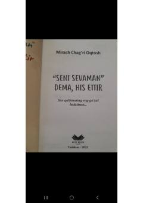

SSSevgini so'z bilan emas, his bilan ifodalash haqida samimiy asar.
Bu kitob Mirach Chag'ri Oqtosh tomonidan yozilgan bo'lib, sevgi va his-tuyg'ularni so'z bilan emas, balki amalda ko'rsatish g'oyasi atrofida qurilgan. 'Sen qalbimning eng go'zal holatisan...' shiori ostida yozilgan asar sevgi, ona va insoniy tuyg'ular haqida fikr yuritadi. Kitob 2022-yilda Toshkentda Best Book nashriyotida chop etilgan.